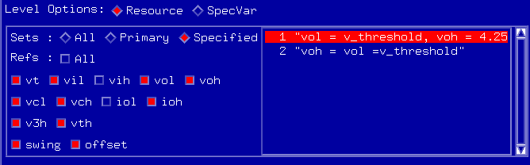

Level Options
- Select which level sets you want in your test.
If you want to specify individual sets rather than All or Primary, click Specified and a selection field similar to that in the figure below appears.

- From the list of level sets, highlight the ones you want to use.Note Independent from your selection, only those level sets will be used that are actually used in the vector pattern (either as primaries or by changing sets using the sequencer command
CLEV). - Select which levels you want to use. Thus you have selected the level options for the chosen pins. When you select other pins, the level selection keeps unchanged.
Functional changes
- Introduced before SmarTest 6.3.2
- SmarTest 6.5.3: The level selection keeps unchanged when you select other pins.